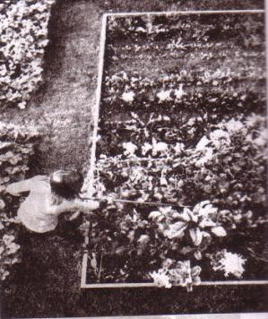
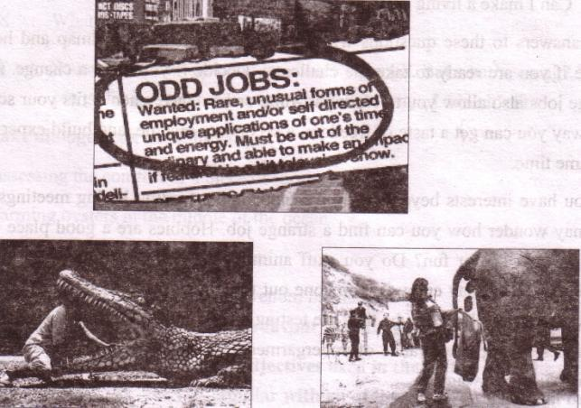
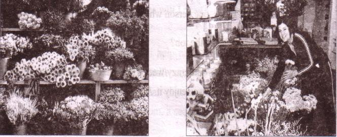

Unit Nine
Unconventional jobs
After we have studied this unit, we will be able to
-
describe familiar objects.
-
read intensively and extensively.
-
participate in debate, discussion.
-
Write about jobs and situations.
-
read for skimming, scanning, and inferring.
( Skimming= to read quickly to get the gist of a text
Scanning= to read quickly to get specific information
Inferring=to read text to be able to make logical conclusion)
112Lesson 1: Jobs around
A . Many of us think that we must have a steady big job to be happy in life. Is that al ways true? Look at the picture and discuss in pairs what you see in it.

B . Read the text. It is about a young entrepreneur, Sayeed Kamal Notice what he thinks about job and happiness. Then answer the questions that follow.
I know you will wonder if I say the best thing that ever happened to me was when I lost my last job. Yes, really!
I was a desk clerk in an office. But believe me I never liked my job. Nothing can be more boring than being stuck in an office all day with computers and telephone.
So after two years or so, I decided to leave my job though I had good salary there. Now I'm an owner of a nursery. Planting seeds, budding, grafting, taking care of saplings, cleaning the flower beds and spending time with trees are my full time job. I start work very early. In summer I usually leave home at 5:30 in the morning, but in winter not until about 7. I've a small hut in my nursery. There cannot be any more pleasure for me than when I see the moon from there or walk through the trees in the soft moonlit night. The winter is just over. So I'm cleaning up the winter flower garden. Now I'm busy in producing more timber and medicinal plants which people will buy from July. Every season is so different and I love them all. When I compare my present days with the past, I simply can't understand how I could survive there in my previous job. I love nature. I just love working outside in the open air after all those months in a stuffy office. Gadgets never attract me and perhaps never will.
I'm not married. I do my own work, even cook my own food. I try not to depend on others for the work which I myself can do. Often my friends are annoyed with me. They say, I should engage a maid for household chores. They are not happy to see me in this `rustic life'. They are professionals. They earn a lot. Maybe --- much more than what I do but I think I enjoy my work more.
113At weekends, I often go to the countryside. Sometimes with my friends, sometimes alone. I love collecting unknown saplings. I have another hobby. I love collecting stamps. I have a Russian stamp during the period of Lenin. I don't watch TV Almost everyone has a TV set these days. But I don't have any. How is that?
The only problem I face is I do not earn enough money in all seasons. The winter and the rain are two busy seasons for me. But it's OK. Maybe I do not earn enough like many other people around me. But I at least earn enough for my family, employees, and me to run a decent life. I must say I'm a very happy man!
Questions
1. What is the best thing that ever happened to this man?
2. Why does Kamal like his job?
3. What is the problem with his job?
4. When does he earn most money?
5. What attitude do you find here in Kamal when you read these lines `Maybe I do not earn enough like many other people around me. But I at least earn enough for my family, employees, and me to run a decent life'?
C . Ask and answer questions about Kamal. Use the clues given.
Example:
[dash] married?
Q: Is he married?
A: No, he isn't. He isn't married.
1. [dash] happy?
2. When [dash] leave home in summer?
3. What [dash] plant after winter?
4. What [dash] do at the weekend?
5. What [dash] collect?
114-
C. Look at the following table. The left column shows some positive aspects of Sayeed Kamal's character. Add some more to the list. Also find out some aspects of Sayeed that you think unacceptable and write them in the right column.
|
Good aspects of Sayeed |
Unacceptable aspects of Sayeed |
|
a. old fashioned |
|
b.loner |
|
c. |
|
d. |
|
e. |
- |
|
f. |
- |
|
g. |
- |
E . Write a paragraph on Sayeed Kamal. Take your cues form D.
F . `I must say I'm a very happy man!'--- Do you agree with Sayeed? Write why/why not?
115Lesson 2: Weird jobs around
A . Look at the following pictures and discuss with your partner what you see
in them.

B . Read the text and answer the following questions.
What type of job do you want to have? Is it a highly paid and high-profile conventional job liked by most people? Yes, you can have it. It is the question of your choice and important decisions that would help you to advance your life ahead. But have you ever thought of other types of jobs out there--- cool, fun, exciting, even strange or weird jobs you never imagined to exist? What are they? Did you ever wonder who picks up the chewing gum left on a park bench or who assesses whether a piece of furniture is comfortable enough or who constructs glass eyeballs or who farms oysters in the middle of the ocean? These are all wacky, odd, unexpected, wild, crazy, unconventional, strange or just plain weird jobs and careers. They are not your traditional career choices, but somebody out there does all these things, gets paid for it, and enjoys life like anybody else.
116There are hundreds of such jobs to take if you want to travel the less taken ways of life. You have to decide on several questions:
-
What companies will recruit/hire me?
-
Do I actually make a paycheck?
-
What type of education/diploma will I need?
-
Can I make a living doing this?
Your answers to these questions will help pave your career roadmap and help you decide if you are ready to take the challenge. Decide if you want a change. A lot of strange jobs also allow you to work part-time or freelance when it fits your schedule. This way you can get a taste of freedom, a secondary income and build experience at the same time.
Do you have interests beyond writing memos and attending boring meetings? If so, you may wonder how you can find a strange job. Hobbies are a good place to start. What do you do for fun? Do you stuff animals, act like Charlie Chaplin, or make model cars? You may enjoy it. Someone out there works in that field and is making money off their hobby. Maybe they are testing mountaineering equipment, developing fragrances, trying new brands of undergarments, or saving sea turtles. And they are getting paid good wages.
Questions
1. `But have you ever thought of other types of Jobs out there----?' What does `other types of jobs' mean here?
2. There are four particular strange and weird jobs mentioned in para one of the text. Which one of them seems to be most weird to you and why?
3. Before going for an unconventional and strange job the author has suggested several questions to decide on? Rearrange them beginning from the most important to you to the least. Add some more questions to the list that might be important to consider.
4. What are some other part-time strange jobs mentioned in the text?
5. What type of job is referred to by the expression `writing memos and attending boring meetings'? Do you think the author's observation on the particular job is justified? Why/Why not?
117C . Look at the following dialogue and act it out in pairs.
X : Have you heard of a job like picking up the chewing gums left on
a park bench?
Y : Yes, I have. I know one person who does that job.
X : What do you think of the job?
Y : Sounds rather funny/odd/crazy/wacky though. But what's wrong?
You can go for it as long as you enjoy it. And if it pays, I think it's fine.
Now make dialogues on the following:
1. assessing the comfort of a piece of furniture
2. farming oysters in the middle of the ocean
D . Arrange a debate in the class in favour of and against strange jobs.
E . Work in pairs. Make a list of adjectives used in the text to describe strange jobs (at least 12). Are you familiar with all of them? If yes, use them in your own written sentences. Compare with your partner's.
If no, try to guess their meaning from the context. Then consult a dictionary to get the meanings. Finally use them in your own sentences.
F . A number of strange jobs have been mentioned in the text. Do you know anyone around you who does one of the jobs? If yes, write a paragraph on him/her.
If no, first select a job. Then try to imagine who around you could successfully do that particular job. Write why you think so.
118Lesson 3: Floral career
A . Look at the pictures and say what you see in them.

B . Work in pairs. Choose a job from the box below but don't tell your
partner. Ask and answer the following Yes/No questions to find out what the job is.
|
Architect |
taxi |
driver |
dentist |
|
farmer |
lawyer |
photographer |
accountant |
|
mechanic |
soldier |
hairdresser |
chef |
|
politician |
nurse |
plumber |
florist |
Use these questions to help you.
|
Do you...? |
Do you have to...? |
Did you have to...? |
|
work inside |
wear a uniform |
study at college |
|
earn a lot |
work in shifts |
do a lot of training |
|
work with people |
use your hands |
do internship |
|
use a computer |
get up early |
- |
|
- |
speak English |
- |
C . Read the text and answer the following questions.
Have you ever thought of a very delicate career? Have you dreamt of a rosy environment full of colour and fragrance? How much would you love it if you were placed in a house full of flowers to deal all day? I'm just going to give you some clues for a way of business, a job.
119Yes. Daisies, violets, tulips, marigolds, dahlias, bellies, jasmines, roses and all those things of beauty can also earn you a living if you handle them professionally. In fact, a florist's career is rather a good choice as an unconventional job for many around the world. Wherever you see eye-catching floral displays, you actually see the professional performance of a floral designer. They are also known as florists and they create superb arrangements with flowers. Using both real and artificial flowers with other greeneries, florists prepare flower displays for a variety of events such as weddings, birthdays, anniversaries, marriage days, Valentine's day, official receptions and even funerals. Every flower is with its distinct colour, design, significance and meaning which flower designers have to know well. There are conventions and significance associated with flowers. We know that conventionally roses are meant for romance and anniversaries and tulips for birthdays.
Although formal education or a diploma is not always essential, florists must have a good taste, good eye for colours, shapes and proportion. They have to have good sense for selecting flowers, ribbons and other accessories to make beautiful arrangements. Professional florists are knowledgeable about not only flowers but also designs and techniques. Most florists learn the trade mainly through apprenticeship in a previous flower farming job and also by attending formal floral schools and courses. However, a true passion for flowers and a bit of aesthetic sense are all that can make a florist's career successful.
Flower designers earn fairly handsome money. But the bonus is that they belong to a fresh fun job. They work in flowers all day long in a nice atmosphere with fresh air, pleasant smells and vivid colours around. But there is a disadvantage too, if you are inclined to see so. Florists deal with flowers, but miss their honey!
Questions
1. How is the career of a florist?
2. What qualities do you need to have for a florist's job?
3. How does most florists learn the trade?
4. What is the extra advantage of a florist's job?
D . Suppose you have met a florist in a flower shop. Write an imaginary interview with him/her.
E . Write a short paragraph giving reasons why you like or dislike the job of
a florist.
120